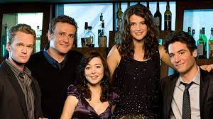
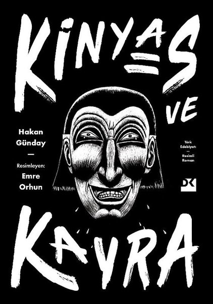
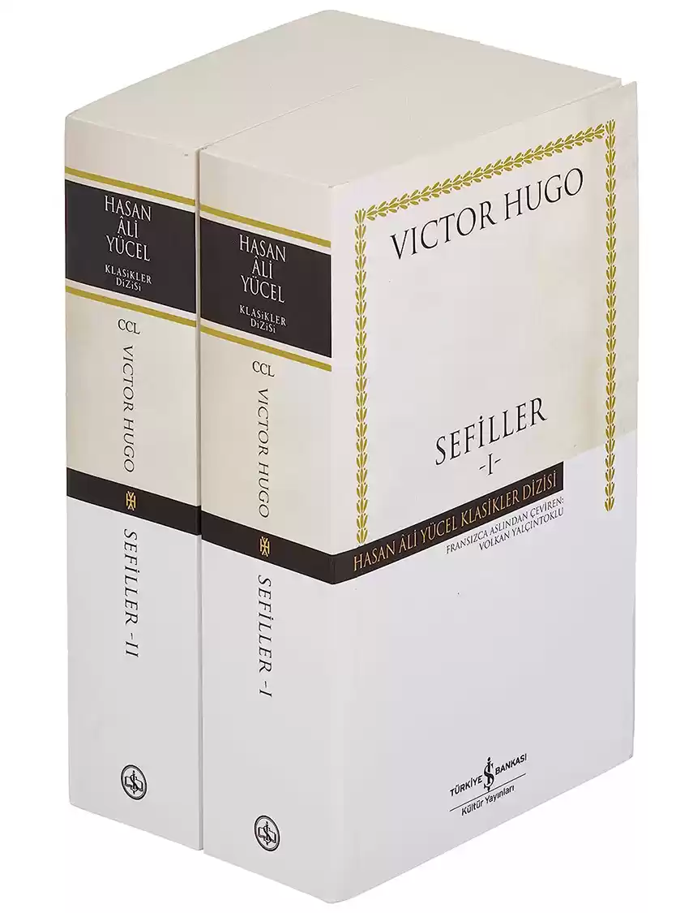

Ben,rabia aslan 23 yaşındayım istanbulda yaşıyorum ve istanbul üniversitesinde bilgisayar programcılığı 2.sınıf öğrencisiyim.
dizinin konusu;Dizi, 2030 yılında, Ted Mosby'nin çocuklarına anneleri (kendi eşi) ile nasıl tanıştığını anlatmasıyla başlar. Bob Saget'in seslendirmesiyle asıl karakteri Ted "Size annenizle nasıl tanıştığımı anlatacağım." der ve dizi 2005 yılına döner. Bays ve Thomas dizideki arkadaşlığı kendi arkadaşlıklarından yola çıkarak yazmışlardır. Buna göre Ted karakterinde daha çok Bays öne çıkarken Marshall ve Lily karakterleri ise Thomas ve eşinden esinlenilmiştir.
Emekli bir adliye memuru olan Agâh Beyoğlu, İstanbul’un en kalabalık ve hareketli semti Beyoğlu’nda yalnız ve münzevi bir yaşam sürdürmektedir. Kızı yurtdışında yaşamakta, eşi ise yıllar önce vefat etmiştir. Agâh’ın bu tekdüze yaşantısı, kendisine konan Alzheimer Başlangıcı teşhisiyle altüst olur. Hastalığından ötürü er geç bütün anılarını unutacaktır. Bu gerçek karşısında başta bocalasa da Agâh, unutmanın bir fırsat olduğunu fark eder. Yıllardır planladığı ancak sürekli ertelediği bir cinayeti işlemek için bir fırsat! Nasıl olsa işleyeceği bu suçu gelecekte hatırlamayacak, hatırlamayacağı için de vicdan azabı çekmeyecektir. Bunun yanında cinayet büro amirliğindeki tek kadın polis olan Nevra, üzerindeki baskılar yüzünden istifanın eşiğine gelmiştir. Ancak Agâh’ın aldığı cinayet kararı, Nevra’nın hayatını da tamamen değiştirecektir.
İMDB linkine burdan ulaşabilirsinizKonusu:Kinyas ve Kayra (2000), Hakan Günday'ın iki Türk gencinin Afrika’da başlayıp Amerika'ya sıçrayan, oradan Türkiye’ye uzanan, şiddet ve cinsellikle yüklü, hayatın kıyısında gezinen hayatlarını anlatan, yayımlanan ilk romanı. Türkiye'de türüne pek rastlanmayan yeraltı edebiyatı örneklerinden sayılmaktadır.
Konusu:SEFİLLER (Fransızca: Les Misérables; Fransızca telaffuz: [le mizeʁabl(ə)]), Victor Hugo tarafından yazılan tarihi romandır. İlk olarak 1862'de yayınlandı. 19. yüzyılın en büyük eserlerinden biri olarak kabul gördü. İngilizce konuşulan ülkelerde başarısız çeviriler nedeniyle genellikle orijinal Fransız ismiyle anılır. Hikâye 1815'te başlar ve 1832'deki Paris Haziran İsyanı'nda son bulur. Birkaç karakterin yaşamını ve birbirleriyle alakasını ele alan roman daha çok eski mahkûm Jean Valjean'ın yaşam mücadelesi ve kefaretini ödemeye çalışmasına odaklanır.
